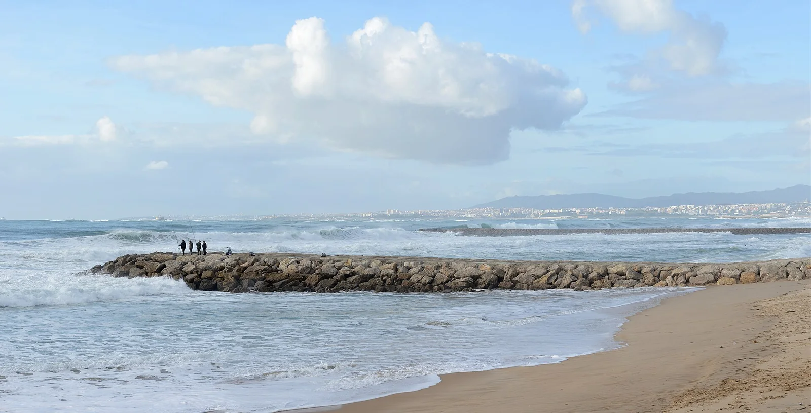

Costa da Caparica
Almada, Portugal · surf, bodyboard, baignade

Des kilomètres de plage face à Lisbonne, avec des épis rocheux qui organisent des pics réguliers. Beaucoup d’écoles de surf y démarrent les débutants.
- Lieu
- Almada, Portugal
- Niveau
- Débutant
- Activités
- surf, bodyboard, baignade
- Type d'eau
- Mer / océan
- Coordonnées
- 38.64, -9.24 (position approximative du secteur)
Dangers à connaître
- Courants le long des épis.
- Nombreuses écoles au même endroit.
Le conseil d'Ocean Buddy
Choisis un pic loin des épis si tu débutes : les courants s’y concentrent.
Ouvrir dans Ocean Buddy Télécharger sur l'App Store
Source : Fiche Ocean Buddy · septembre 2026 · à vérifier localement.